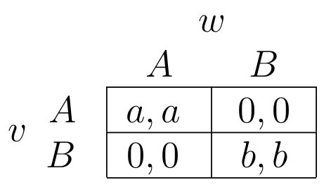
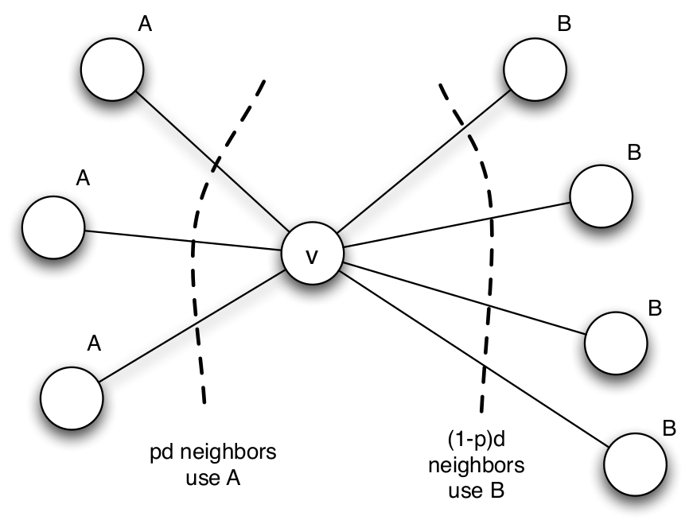
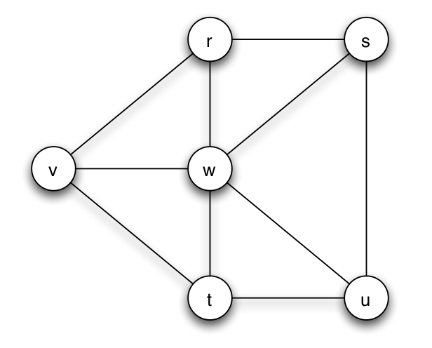
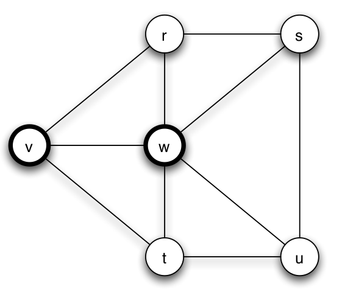
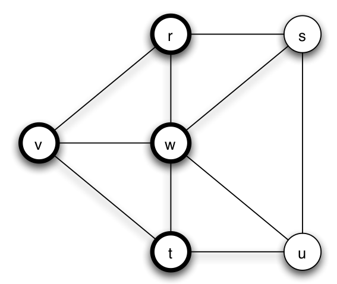
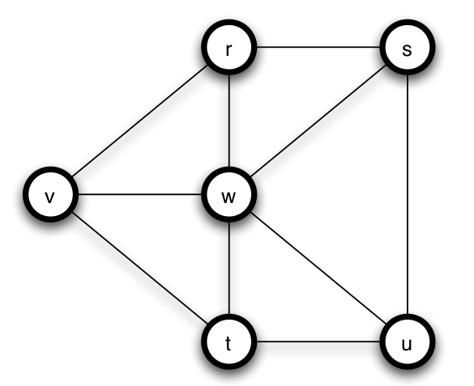
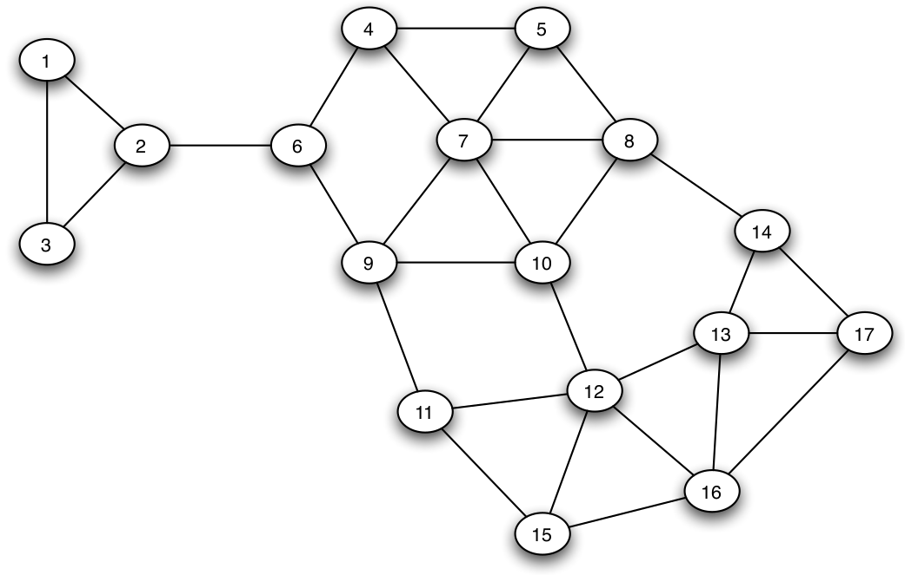

AR - Lesson 09
Indice
1 Processi di Diffusione su Reti
Uno dei quesiti principali fin ora posti è cercare di capire come le scelte dei singoli individui sono influenzate dal comportamento degli altri individui.
Quando si fa questo tipo di analisi si può considerare la rete sottostante in due differenti livelli di risoluzione: un livello in cui guardiamo la rete dall'alto e osserviamo il comportamento
di gruppi di individui, e un livello più dettagliato in cui si considera la struttura della rete come grafo e si cerca di analizzare/intuire come i singoli individui sono influenzati dal loro diretto vicinato.
In questa parte verrà analizzato il secondo punto di vista, assumendo che i singoli individui abbiano solo una visione locale della rete, e non globale, e di conseguenza che prendano decisioni in base a
ciò che osservano (ovvero in base al comportamento dei loro vicini).
Questo framework è abbastanza ragionevole, in quanto è ragionevole pernsare che una persona venga influenzata e cambi comportamento in base al gruppo in cui appartengono, ricevendo così benefini.
Per esempio è conveniente che una persona adotti una nuova lingua perché la grande maggioranza delle persone con cui a che fare parlano tale lingua, fregandosene di quale sia la lingua più parlata in assoluto al livello globale.
Questi ragionamenti sono alla base del concetto di omofilia.
Per omofilia da una parte si intende la capacità che ha un individuo di creare relazioni con altri individui che più gli assomigliano (riferendoci per esempio alla chiusura triadica),
e dall'altra parte è la tendenza a cercare di assomigliare a chi li circonda in modo tale da trarne vantaggi.
Per esempio in un contesto sociale reale le persone tendono a creare rapporti con altre persone che hanno stessi gusti e/o opinioni, d'altro canto però spesso per ridurre la tensione sociale si tende
a scendere a compromessi adattandosi a ciò che vogliono gli altri.
1.1 La diffusione di innovazioni
Di seguito verrà considerato come nuovi comportamenti, pratiche, opinioni e tecnologie si diffondono da persona a persona attraverso le reti sociali, ovvero come le persone influenzano i propri amici a cambiare idea. La comprensione di come questi fenomeni lavorano sono basati su storici studi empirici/sociologici noti come diffusione di innovazioni. Uno di questi studi fu quello condotto da Ryan & Gross basato su un esperimento di adozione di nuovi semi ibridi da parte degli agricoltori dell Iowa, che mostrò come le scelte del proprio gruppo sociale forscono in maniera indiretta informazioni agli individui sulla convenienza o meno dell'adozione di una nuova innovazione. Ryan e Gross intervistarono gli agricoltori chiedendo loro se conoscevano i nuovi semi e se/quando li avrebbero adottati. Notarono che nonstante la maggior parte di loro era venuto a conoscenza dei semi da parte dei venditori, solo un piccolo numero di loro decise di addottare i semi "a scatola chiusa". Contrariamente riscontrarono che molti iniziarono a provare i semi solamente dopo aver osservato altri agricoltori conoscenti che li avevano già provati. Questo perché appunto si può trarre la seguente informazione:
"Se tanti usano i nuovi semi, allora posso pensare che sono buoni."
1.2 Coordination Game - Modello Lineare
A questo punto potremmo voler modellare il processo di diffusione di innovazioni su una rete, e vogliamo farlo in modo da rispettare quanto osservato in precedenza.
Vogliamo che gli individui del modello prendano decisioni in maniera del tutto individuale, ovvero che non si prendano decisioni mettendosi d'accordo con altri.
Inoltre le decisioni devono essere prese sulla base di una stima rischio/beneficio che si ha dell'adottare una innovazione.
Ovvero le decisioni vengono prese solamente per un guadagno personale senza pensare al bene degli altri, ovvero seguendo la filosofia del "se mi conviene lo faccio, altrimenti no".
Questo tipo di modello è anche noto come direc-benefit.
Assumiamo che tutti della rete partano con uno stato (o idea, opinione, tecnologia, …) B, e che a un certo punto alcuni nodi adottino lo stato A.
Assumendo che una volta adottato allo stato A non si può più tornare nello stato B ci si chiede in quali casi un nodo decide di cambiare stato ad A.
Per modellare questa dinamica facciamo riferimento a un coordination game in cui due nodi vicini ricavano un vantaggio nell'avere uno stesso stato, e devono coordinarsi nel decidere una strategia
in modo tale da massimizzare i profitti, senza però potersi mettere d'accordo.
Più precisamente sia un arco \((v,w)\) della rete:
- se \(v\) e \(w\) sono nello stesso stato
Aavranno un guadagno pari ad un valore \(a > 0\). - se \(v\) e \(w\) sono nello stesso stato
Bavranno un guadagno pari ad un valore \(b > 0\). - se \(v\) e \(w\) sono in due stati discordi non ricevono alcun guadagno reciproco.

Figura 1: A-B coordination game.
Ovviamente il nodo \(v\) gioca una copia del coordination game su ognuno dei suoi archi incidenti, perciò il suo guadagno sarà la somma di tutti i guadagni su ogni arco.
Andiamo ora ad analizzare quando al nodo \(v\) conviene adottare lo stato A oppure no, sapendo che parte dallo stato B.
Definiamo con \(n_A\) ed \(n_B\) il numero dei suoi vicini rispettivamente negli stati A e B.
Intuitivamente viene da pensare che \(v\) agisce nei seguenti modi:
- se \(b n_B > a n_A\) allora gli conviene rimandere in
B. - se \(a n_A > b n_B\) allora gli conviene adottare
A.
Assumiamo che nel caso di parità di guadagno venga comunque preferita l'innovazione A anziché rimanere nello stato attuale.
Perciò si adotta lo stato A se \(a n_A \geq b n_B\).
Supponiamo che una porzione \(p\) dei vicini di \(v\) sia nello stato A, e che una frazione \(1-p\) sia nello stato B
Perciò possiamo dire che a \(v\) conviene cambiare stato se
\begin{align*} n_A a &\geq n_B b\\ (\vert N(v) \vert \cdot p) a &\geq (\vert N(v) \vert \cdot (1-p)) b\\ p a &\geq (1-p)b\\ p &\geq \frac{b}{a+b} \end{align*}
Definiamo con \(q = \frac{b}{a+b}\) la frazione minima dei vicini di \(v\) che devono essere nello stato A per rendere l'adozione di A conveniente rispetto a B.
D'ora in poi ci riferiremo a \(q\) con soglia di adozione.

Figura 2: \(v\) deve scegliere A o B in base al suo vicinato
Osserviamo che quando il guadagno \(a\) è molto più grande di \(b\), allora la soglia di adozione \(q\) è molto bassa, ovvero servono pochi vicini nello stato A per convincere anche \(v\).
Viceversa, se \(a\) è molto più piccolo di \(b\) allora la soglia cresce molto (tendendo ad 1), il che significa che servono molti vicini nello stato A per convincere \(v\).
Infine, se i due guadagni sono uguali \(a = b\), allora occorrono almeno la metà dei vicini nello stato A.
2 Cascading Behavior
Iniziamo col chiederci quali sono le possibili configurazioni di equilibrio della rete, ovvero configurazioni di stati A-B in cui nessuno più cambia stato.
Certamente due configurazioni banali sono la configurazione in cui nessuno adotta A, e quindi sono tutti nello stato B, oppure la configurazione in cui, una volta introdotto A, tutti passano allo stato A.
Quello che ci si può chiedere è:
- esistono condizioni per le quali
Asi diffonde in tutta la rete? - se si, entro quanto tempo riesce a farlo?
- oppure esistono situazioni in cui la diffusione di
Asi blocca in configurazioni intermedie? - e per quale motivo si blocca?
Introduciamo la seguente terminologia:
Consideriamo un insieme di nodi iniziali che adottano un nuovo comportamento
A, mentre ogni altro nodo inizia col comportamentoB. I nodi valutano continuamente la decisione di passare daBadAconsiderando la soglia di adozione \(q\). Se eventualmente la cascata di adozioni diAcausa un'adozione globale diA(ovvero che tutti i nodi con comportamentoBpassano adA) allora diremo che l'insieme iniziale di adottatori diAha causato una cascata completa con soglia di adozione \(q\).
2.1 Osservazioni empiriche
Per prima cosa consideriamo alcuni esempi.
Esempio 1
Consideriamo al seguente rete

Forziamo poi lo stato dei nodi \(v\) e \(w\) ad A

Ponendo i guadagni \(a = 3\) e \(b = 2\) otteremo una soglia d'adozione di \(q = \frac{2}{5}\), il che significa che almeno \(\frac{2}{5}\) dei vicini di un nodo devono avere lo stato A per convincere tale nodo a cambiare.
Nell'esempio in questione, come prima cosa i nodi \(r\) e \(t\) passeranno allo stato A perché hanno entrambi \(\frac{2}{3} > \frac{2}{5}\) vicini nello stato A.
I nodi \(u\) ed \(s\) invece rimarranno inizialmente in B in quanto solamente \(\frac{1}{3} < \frac{2}{5}\) dei propri vicini è in A (ancora non conviene cambiare).

Infine, nel secondo step, anche a \(u\) ed \(s\) converrà adottare il nuovo stato A

ottenendo così una diffusione totale dello stato A rispetto allo stato B.
Se invece ponessimo come valori \(a = 1\) e \(b = 3\), avremmo una soglia di adozione pari a \(q = \frac{3}{4}\), la quale non sarebbe soffuciente per la diffusione di A.
Esempio 2
Consideriamo ora l'A-B coordination game su un grafo più grande

e poniamo ancora i parametri \(a = 3\), \(b = 2\) e \(q = \frac{b}{a+b} = \frac{2}{5}\).
Se inizialmente i nodi 7 e 8 adottano lo stato A, avremo che al primo step passeranno i nodi 5 e 10, poi 4 e 9 e poi il nodo 6.
A questo punto a nessun altro nodo della rete converrà adottare A.
Ciò che vogliamo sapere è come possiamo fare in modo di ottenere una cascata completa di A su tutta la rete?
Come prima cosa si potrebbe aumnetare il guadagno di A, abbassando così la sua soglia d'adozione.
Infatti, se per esempio poniamo i parametri \(a = 4\) e \(b = 2\) (ovvero con soglia di adozione di \(\frac{1}{3}\)) otteremo una cascata completa di A.
Se in un contesto reale A è una nuova tecnologia, ciò che abbiamo fatto è stato per esempio abbassare il prezzo di A in modo convincere più gente a comprarlo.
Un altro modo è invece quello di aumentare e/o cambiare i nodi iniziali nello stato A (senza alterare la soglia d'adozione \(q\)).
Per esempio consideriamo come insieme di nodi iniziali nello stato A i nodi \(\lbrace 2, 7, 8, 12 \rbrace\) (e ricordiamo che \(q = \frac{2}{5}\) è rimasta invariata).
È facile osservare in questo caso che A si propaga su tutta la rete.
Figura 9: Nodi iniziali \(\lbrace 2, 7, 8, 12 \rbrace\), \(a = 3\) e \(b = 2\).
Quindi, se non alteriamo \(q\), viene da pensare che se il numero di nodi iniziali supera una certa soglia critica, allora avviene una cascata completa di A.
In realtà l'avvenire di una cascata completa di A non dipende solamente da quanti nodi iniziali sono forzati nello stato A, bensì anche dalla loro posizione.
Per esempio se consideriamo altri 4 nodi iniziali \(\lbrace 2, 7, 8, 14 \rbrace\) non otterremo una cascata completa, nonostante ci siano lo stesso 4 nodi iniziali che adottano A.
Figura 10: Controesempio con nodi iniziali \(\lbrace 2, 7, 8, 14 \rbrace\).
2.2 Cascate e Cluster
Cerchiamo ora di capire come mai le cascate complete non dipendono solamente dal numero di iniziatori, ma anche dalle loro posizioni nella rete.
Per prima cosa facciamo alcune definizioni formali
- indichiamo con \(V_0 \subseteq V\) l'insieme di nodi iniziatori di
A. - indichiamo con \(V_1 \subseteq V\) l'insieme di nodi vicini dei nodi che stanno in \(V_0\), che adottano
Aal tempo \(t = 1\). - induttivamente indichiamo con \(V_i\) l'insieme di nodi che adottano
Aal tempo \(t = i\).
Possiamo dire che la diffusione di A si ferma quando
\[
\bigcup_{i = 0}^{t} V_i = \bigcup_{i = 0}^{t+1} V_i
\]
Di conseguenza possiamo dire che avviene una cascata completa di A se siste un tempo \(t \geq 0\) tale che
\[
\bigcup_{i = 0}^{t} V_i = V
\]
Riguardando l'esempio 2, possiamo individuare delle componenti più coese di nodi, più precisamente
- il gruppo \(\lbrace 1,2,3 \rbrace\).
- il gruppo \(\lbrace 4,5,6,7,8,9,10 \rbrace\).
- il gruppo \(\lbrace 11,12,13,14,15,16,17 \rbrace\).
Dall'esempio si può notare che la diffusione di A fa "fatica" ad uscire dai singoli gruppi.
In realtà esiste una relazione tra gruppi di nodi coesi tra loro e le cascate complete.
Definiamo un modello di coesione utile ad analizzare tale relazione.
Def (Cluster di densità \(p\)) Un cluster di densità \(p\) è un sottoinsieme di nodi \(V' \subseteq V\) tale che la frazioni di vicini che ogni suo nodo ha in \(V'\) è almeno \(p\), ovvero \[ \forall u \in V' \; \left[ \frac{\vert N(u) \cap V' \vert}{\vert N(u) \vert} > p \right] \]
Osservare che una strong web community è un cluster di densitatà \(p\) con \(p = \frac{1}{2}\).
Osservare anche che se \(V',V''\) sono due cluster di densitatà \(p\), allora anche \(V' \cup V''\) è un cluster di densità \(p\).
Questo è facilmente verificabile perché \( \vert N(u) \cap (V' \cup V'') \vert \geq \vert N(u) \cap V' \vert\) e \( \vert N(u) \cap (V' \cup V'') \vert \geq \vert N(u) \cap V'' \vert\).
THM Sia il grafo \(G=(V,E)\), l'insieme di iniziatori \(V_0 \subseteq V\) e la soglia di adozione \(q\) per l'innovazione
A. L'insieme \(V_0\) non genera una cascata completa diAse e solo so \(G-V_0\) congiene un cluster di densità \(1 - q\).
Proof Iniziamo col dimostrare il primo verso dell'implicazione, ovvero che se \(V_0\) non genera una cascata completa di
Aallora \(G-V_0\) congiene un cluster di densità \(1 - q\).
Se \(V_0\) non genera una cascata completa allora esisteranno dei nodi che al termine non avranno adottatoA, e quindi esisterà un tempo \(t+1\) nel quale la diffusione diAsi ferma, ovvero quando \[ V_t \neq \emptyset\\ V_{t+1} = \emptyset \]Definiamo con \(V_A\) l'insieme di tutti i nodi che adottano
Anel processo di diffusione \[ V_A \equiv \bigcup_{i=0}^{t} V_i \] Poiché stiamo ipotizzando che \(V_0\) non genera una cascata completa diA, avremo che \(V \setminus V_A \neq \emptyset\).
Dato che i nodi in \(V \setminus V_A\) non adottano mai
A, ciò vuol dire che nessuno di essi ha una frazione di vicini nello statoAmaggiore della soglia di adozione, ovvero \[ \forall u \in V \setminus V_A \; \left[ \frac{\vert N(u) \cap V_A \vert}{\vert N(u) \vert} < q \right] \]Le precedenti osservazioni implicano la seguente espressione
\begin{align*} 1 &= \frac{\vert N(u) \vert}{\vert N(u) \vert}\\ &= \frac{\vert N(u) \cap V \vert}{\vert N(u) \vert}\\ &= \frac{\vert N(u) \cap ((V \setminus V_A) \cup V_A) \vert}{\vert N(u) \vert}\\ &= \frac{\vert (N(u) \cap (V \setminus V_A)) \cup (N(u) \cap V_A) \vert}{\vert N(u) \vert}\\ &= \frac{\vert N(u) \cap (V \setminus V_A) \vert}{\vert N(u) \vert} + \frac{\vert N(u) \cap V_A \vert}{\vert N(u) \vert}\\ &< \frac{\vert N(u) \cap (V \setminus V_A) \vert}{\vert N(u) \vert} + q \end{align*}ovvero \(\frac{\vert N(u) \cap (V \setminus V_A) \vert}{\vert N(u) \vert} > 1 - q\), il che significa che \(V \setminus V_A\) è un cluster di densità \(1 - q\). Inoltre dato che \(V_0 \subseteq V_A\) a maggior ragione \(V \setminus V_A\) è contenuto in \(G - V_0\).
Ora bisogna dimostrare l'altro verso della dimostrazione, ovvero che se \(G - V_0\) contiene un cluster di densità \(1-q\) \(C \subseteq V\) allora \(V_0\) non genera una cascata completa di
A.
Supponiamo per assurdo che \(V_0\) generi una cascata completa diA. Allora certamente prima o poi tutti i nodi di \(C\) adotterano lo statoA. Sia il tempo \(t\) in cui i primi nodi di \(C\) adottanoA, ovvero quel \(t\) tale che \[ \bigcup_{i = 0}^{t-1} V_i \cap C = \emptyset\\ V_t \cap C \neq \emptyset \]Definiamo con \(V'\) tutti i nodi che al tempo \(t-1\) si trovano nello stato
A(e che quindi non sono in \(C\)), ovvero \(V' \equiv \bigcup_{i = 0}^{t-1} V_i\).
Prendiamo uno dei nodi \(u \in C\) che passano in
Aal tempo \(t\), ovvero un \(u \in V_t\). Poiché \(C\) è un cluster di densità \(1-q\) avremo che \[ \frac{\vert N(u) \cap C \vert}{\vert N(u) \vert} > 1 - q \] e siccome sappiamo che \(u\) ha adottatoAal tempo \(t\) è vero che almeno una frazione \(q\) dei suoi vicini era nello statoA, ovvero \[ \frac{\vert N(u) \cap V' \vert}{\vert N(u) \vert} \geq q \]Se le precedenti ipotesi sono vere otterremo che
\begin{align*} 1 &= \frac{\vert N(u) \vert}{\vert N(u) \vert}\\ &\geq \frac{\vert N(u) \cap (V' \cup C) \vert}{\vert N(u) \vert}\\ (V' \cap C = \emptyset) &= \frac{\vert N(u) \cap V' \vert}{\vert N(u) \vert} + \frac{\vert N(u) \cap C \vert}{\vert N(u) \vert}\\ &> q + 1 - q = 1 \end{align*}assurdo!\(\square\)
Ciò che ci dice il precedente teorema è sostanzialmente che la presenza di cluster (con una certa densità) comporta un ostacolo alla diffusione di una innovazione A.
Ricordiamo dalle lezioni precedenti (Communities - Part 1 e Communities - Part 2) che generalmente i legami che colleggano due comunità (o cluster) sono dei legami deboli (weak ties).
Infatti la forza dei weak ties è basata sull'idea che le connessioni sociali deboli (per esempio con persone che vediamo di rado) spesso formano bridege edges in una rete sociale.
Pertanto forniscono accesso a fonti di informazioni (per esempio nuove opportunità di lavoro1) che risiedono in parti della rete a cui altrimenti non avremmo accesso.
Osserviamo inoltre che c'è una sostanzile differenza tra venire a conoscenza di una nuova idea e il decidere di adottarla.
Infatti considerando ancora l'esempio 2, possiamo osservare che i nodi 4 e 9 vengono subito a conoscenza dell'innovazione A in quanto entrambi sono vicini di un nodo iniziatore,
però attendono più tempo prima di adottarlo.
Anche in un contesto sociale reale, sebbene la consapevolezza di una barzelletta o di un video online avanza con una velocità notevole, la mobilitazione politica si muove più lentamente,
avendo bisogno di prendere slancio all'interno di comunità.
La soglia di adozione \(q\) offre una possibile spiegazione: i movimenti sociali tendono ad essere imprese intrinsecamente rischiose, e quindi gli individui tendono a necessitare di soglie più elevate
per la partecipazione.
Perciò possiamo concludere che mentre i weak-ties che collegano due comunità differenti sono utilissimi alla diffusione di informazioni, allo stesso tempo sono un punto di debolezza (e quindi di
ostacolo) per la diffusione di un'innovazione.
3 Cluster e Marketing Virale
3.1 Capacità di Cascata
4 Modello eterogeneo
5 Azioni collettive
6 Diffusione in presenza di compatibilità
Note a piè di pagina:
Esperimento di Granovetter.